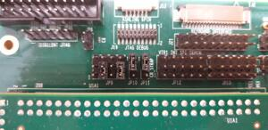
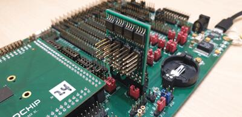
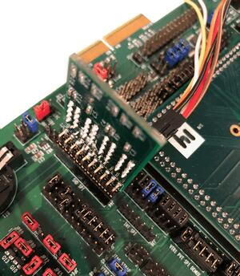
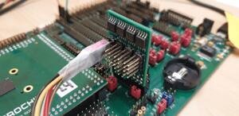
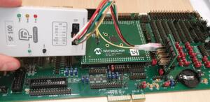
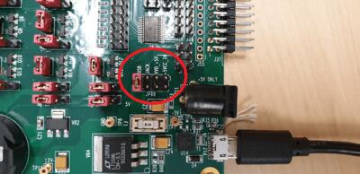
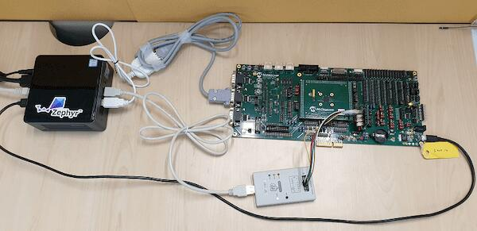
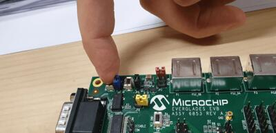

MEC15xxEVB ASSY6853
概述
MEC15xxEVB_ASSY6853 套件是用于评估 Microchip MEC15XX 系列微控制器的未来开发平台。该开发板需要与料号为 MEC1501 144WFBA SOLDER DC ASSY 6860 的 CPU 板配合才能工作。在量产中，MEC152x 已取代 MEC1501。MEC152x 与 MEC150x 完全相同，只是增强了 Boot-ROM SPI 加载程序。SPI 镜像格式已更新，需要使用新的 SPI 镜像工具。MEC1501 和 MEC152x 的 SPI 镜像格式互不兼容。评估板和 CPU 板是兼容的。
硬件
MEC1521HA0SZ ARM Cortex-M4 处理器
256 KB RAM 和 64 KB 启动 ROM
键盘接口
ADC 和 GPIO 排针
UART0、UART1 和 UART2
FAN0、FAN1、FAN2 排针
风扇 PWM 接口
JTAG/SWD、ETM 和 MCHP 跟踪端口
PECI 3.0 接口
I2C 电平转换器
10 个 SMBUS 排针
4 个 SGPIO 排针
VCI 接口
5 个独立的硬件驱动 PS/2 端口
eSPI 排针
3 Breathing/Blinking LEDs
2 个 SPI NOR 芯片插座
复位按键和 VCC_PWRDGD 按键各一个
一个外部 PCA9555 I/O 端口，I2C 地址可通过跳线选择。
一个外部 LTC2489 delta-sigma ADC，I2C 地址可通过跳线选择。
开发板电源可通过跳线选择由 +5V 2.1mm/5.5mm 圆形电源插座或 USB Micro A 连接器供电。
有关这些 SoC 的更多信息，请参阅 MEC152x Reference Manual [1]
支持的功能
mec15xxevb_assy6853 开发板支持下列硬件功能。
说明
The list of supported hardware features was not generated. Run a full documentation build for the required metadata to be available.
连接与 IO
该评估板套件由以下硬件模块组成：
MEC15xx EVB ASSY 6853 Rev A MEC15xx EVB Schematic [2]
搭载 MEC152x 芯片的 MEC1501 144WFBA SOLDER DC ASSY 6883，参见 MEC1501 Daughter Card Schematic [3]
SPI DONGLE ASSY 6791 SPI Dongle Schematic [4]
系统时钟
MEC1521 MCU 配置为使用 48Mhz 内部振荡器，并通过片上 PLL 生成 12 MHz 的 EC 时钟频率。请参阅本文档末尾参考资料中数据手册第 4 章 "4.0 POWER, CLOCKS, and RESETS" 中的处理器时钟控制寄存器。
串口
UART2 配置用于输出串口日志。
跳线设置
请按照以下跳线设置来正确演示本开发板。高级用户可以不按此建议设置。
MEC15xx EVB Assy 6853 Rev A1p0 的跳线设置
Boot-ROM 启动配置引脚（strap）。
这些跳线用于配置 MEC1501 Boot-ROM 的启动配置引脚（strap）。
JP93 (CMP_STRAP) |
JP11 (CR_STRAP) |
JP46 (VTR2_STRAP) |
JP96 (BSS_STRAP) |
|---|---|---|---|
2-3 |
1-2 |
2-3 |
1-2 |
JP96 1-2 将 SHD SPI CS0# 上拉到 VTR2。MEC1501 Boot-ROM 会采样 SHD SPI CS0#，如果为高电平，就从 SHD SPI 加载代码。
外设路由跳线
下表的各列分别说明如何启用 UART2、SWD、PVT SPI、SHD SPI 和 LED0-2。
JP48 (UART2) |
JP9 (UART2) |
JP9 (SWD) |
JP38 (PVT SPI) |
JP98 (SHD SPI) |
JP41 (LED0-2) |
|---|---|---|---|---|---|
1-2 |
2-3 |
2-3 |
2-3 |
1-2 |
|
4-5 |
4-5 |
5-6 |
5-6 |
3-4 |
|
7-8 |
8-9 |
8-9 |
8-9 |
5-6 |
|
10-11 |
10-11 |
11-12 |
11-12 |
||
14-15 |
14-15 |
||||
17-18 |
20-21 |
备注
对于 UART2，请确保 JP39 的跳线连接 1-2、3-4。
要接收 UART2 串口输出，请参照下图，确保 JP9 已配置为 UART2 输出。

MEC1501 144WFBGA Socket DC Assy 6883 Rev B1p0 的跳线设置
上面说明的跳线配置针对底板。ASSY 6883 MEC1501 CPU 板支持可选的外部 32KHz 时钟源。该卡带有一个 32KHz 晶体振荡器，也可以配置为在 XTAL2/32KHZ_IN 引脚上使用外部 50% 占空比的 32KHz 时钟源。注意，固件必须设置 MEC15xx 时钟使能寄存器，选择与跳线设置相符的外部时钟源。如果使用 MEC15xx 内部硅振荡器，则 32K 跳线如何设置都无关紧要。JP1 用于用示波器观察测试时钟输出。请参阅下文参考资料部分中的原理图。
并联 32KHz 晶体配置
JP2 |
JP3 |
|---|---|
1-2 |
2-3 |
外部 32KHz 50% 占空比配置
JP2 |
JP3 |
|---|---|
NC |
1-2 |
MEC1503 144WFBGA Socket DC Assy 6856 Rev B1p0 的跳线设置
MEC1503 ASSY 6856 CPU 卡没有板载外部 32K 晶体或振荡器。唯一的跳线组 JP1 用于用示波器观察测试时钟输出，而不是用于配置。请参阅下文参考资料部分中的原理图。
编程与调试
说明
The list of supported runners was not generated. Run a full documentation build for the required metadata to be available.
设置
如果使用 Dediprog SF100 编程器，请先进行设置。
Windows 版本可在 SF100 Product page [8] 获取。
Linux 版本源代码可在 SF100 Linux GitHub [7] 获取。按照 SF100 Linux manual [9] 完成 SF100 编程器的设置。在 Linux 上，请确保已将
SF100Linux文件夹中的60-dediprog.rules复制到/etc/udev/rules.s（或 rules.d），然后使用以下命令重启服务：$ udevadm control --reload
将包含
dpcmd（Linux）或dpcmd.exe（Windows）程序的目录添加到PATH。克隆 MEC152x SPI Image Gen [5] 仓库，或下载该目录中的文件。对于预量产的 MEC150x，请使用 MEC150x SPI Image Gen [6] 仓库。
让 Zephyr 能够使用该镜像生成工具：将工具加入路径以便查找，或设置环境变量
EVERGLADES_SPI_GEN，例如：export EVERGLADES_SPI_GEN=<path to tool>/everglades_spi_gen_RomE注意，Linux 和 Windows 版本的工具文件名不同。对于预量产版 MEC1501 SOC，请使用 everglades_spi_gen_lin64。
如有需要，可以指定自定义的 SPI 镜像配置文件来覆盖默认配置文件。
export EVERGLADES_SPI_CFG=custom_spi_cfg.txt
接线
将 SPI Dongle ASSY 6791 连接到 EVB 上的
J44。
将编程器连接到 Assy6791 板上的排针 J6，它会烧录 SPI NOR 芯片
U3。请确保编程器的偏移量为 0x0。可以使用 Dediprog SF100 或类似的 SPI 芯片烧录工具进行编程。Microchip 开发板接线 


备注
注意，Dediprog 排针上的 SPI MISO/MOSI 是对调的！请使用单独的导线将 Dediprog 引脚连接到 Assy6791 SPI 板上的引脚。接线方式见下表。
Dediprog 连接器
Assy6791 J6 连接器
VCC
1
GND
2
CS
3
CLK
4
MISO
6
MOSI
5
使用 RS232 线缆将 MEC15xxEVB_ASSY_6853 开发板的 UART2 端口连接到主机。
通过 micro-USB 线给开发板供电。在
JP88 7-8之间连接跳线即可配置此选项。
开发板的最终接线应如下所示：

构建
按常规方式构建 Hello World 应用程序。
如果构建系统能找到镜像生成工具，就会生成
spi_image.bin文件。该二进制镜像可用于烧写 SPI 芯片。
烧录
运行你常用的终端程序以监听输出。在 Linux 下，终端应为
/dev/ttyUSB0。不要关闭它。例如：
$ minicom -D /dev/ttyUSB0 -o
-o 选项让 minicom 不发送调制解调器初始化字符串。连接应按如下方式配置：
波特率：115200
数据位：8 位
校验位：无
停止位：1
在第二个终端窗口中使用
west烧录开发板。将第一个和第二个终端窗口分屏显示，以便同时查看。$ west flash
备注
west 过程开始后，按住复位按键，直到整个 west 过程成功完成后再松开。

备注
如果不想每次都按复位按键，可以在 west flash 编程期间断开 SPI Dongle ASSY 6791 与 EVB 的连接，然后再将其连回
J44排针并给 EVB 上电。结果是一样的。应该会在第一个终端窗口中看到
"Hello World! mec15xxevb_assy6853"。如果没有看到这条消息，请按复位按键，消息就会出现。
调试
本开发板带有 Cortex ETM 端口，只需一个物理连接即可进行跟踪和调试。此外，它还带有仅用于 JTAG 会话的插座。
故障排除
如果没有看到应用程序运行，请确认
LED7、LED8和LED1都已点亮。如果其中任何一个不亮，请再次检查与电源相关的跳线。如果无法使用 Dediprog 对开发板编程，请断开 Assy6791 与主板 Assy6853 的连接，然后重试。
如果 Dediprog 无法检测到板载 Flash，请按下开发板的复位（Reset）按键后重试。
备注
要在 mec15xxevb_assy6853 上启用 PCA9555PW 并测试 I2C，还需要做一些额外的工作：
mec15xxevb_assy6853 上的 I2C 从设备 NXP pca95xx 连接到 I2C00 端口，但 I2C00 端口与用于捕获串口日志的 UART2 RS232 转 TTL 转换器共用，因此无法同时使用 UART2 和 I2C00 端口。需要按如下方式设置跳线，改用 I2C01 端口：
JP99 1-2 连接 将 CPU 的 I2C01_SDA 连接到排针 J5
JP99 13-14 连接 将 CPU 的 I2C01_SCL 连接到排针 J5
JP25 21-22 连接 I2C01_SDA 的外部上拉
JP25 23-24 连接 I2C01_SCL 的外部上拉
JP44.1 J5.1 连接 将 NXP PCA95xx 连接到 I2C01
JP44.3 J5.3 连接 将 NXP PCA95xx 连接到 I2C01